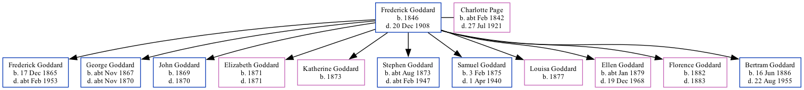

Frederick Steed Goddard 1846 - 1908
[ Home ] | [ Calendar ] | [ Surnames Index ] | [ Family History ]Frederick Goddard, the husband of Charlotte Ann Page (the first cousin three-times-removed on the father's side of Nigel Horne), was born in Aldington, Kent, England in 18461,2,3,4,5,6 and married Charlotte (a laundress with whom he had 11 children: Frederick Thomas, George Stephen, John, Elizabeth Jane, Katherine, Stephen Page, Samuel, Louisa J, Ellen Charlotte, Florence Julia and Bertram Charles) at Christ Church, Folkestone, Kent, England on Sep 10, 18659.
Frederick spent all of his life in Kent, England. Throughout his life, he lived at Back Berkley Place Cottage in Folkestone on Apr 2, 18711; and at Foord Road in Folkestone on Apr 3, 18812, on Apr 5, 18913 and on Mar 31, 19014.
He died on Dec 20, 1908 in Elham, Kent, England5,6,7,8 and was buried at Cheriton Road Cemetery in Folkestone on Dec 24, 19086.
Children
- Frederick Thomas was born on Dec 17, 1865
- George Stephen was born c. Nov 1867
- John was born in 1869
- Elizabeth Jane was born in 1871
- Katherine was born in 1873
- Stephen Page was born c. Aug 1873
- Samuel was born on Feb 3, 1875
- Louisa J was born in 1877
- Ellen Charlotte was born c. Jan 1879
- Florence Julia was born in 1882
- Bertram Charles was born on Jun 16, 1886
Citations
- 1871 England, Wales & Scotland Census - Findmypast (was age 23 and the head of the household)
- 1881 England, Wales & Scotland Census - Findmypast (was age 39 and the head of the household)
- 1891 England, Wales & Scotland Census - Findmypast (was age 43 and the head of the household)
- 1901 England, Wales & Scotland Census - Findmypast (was age 54 and the head of the household)
- England & Wales deaths 1837-2007 - Findmypast
- Kent Burials - Findmypast
- England Billion Graves cemetery index - Findmypast
- Kent, Folkestone Cheriton Road Cemetery Memorial Inscriptions - Findmypast
- Kent Marriages And Banns - Findmypast
Media
1871 England, Wales & Scotland Census - GBC/1871/0014384997
1901 England, Wales & Scotland Census - GBC/1901/0005830954
England & Wales deaths 1837-2007 - BMD/D/1908/4/AZ/000133/205
Kent Burials - GBPRS/CANT/D/95470855
Kent, Folkestone Cheriton Road Cemetery memorial inscriptions - GBPRS/KENT/MIS00003537
England Billion Graves cemetery index - US/BMD/BILLION/5/000029067097
Family Tree
Generated by ged2site. Last updated on Nov 13, 2024